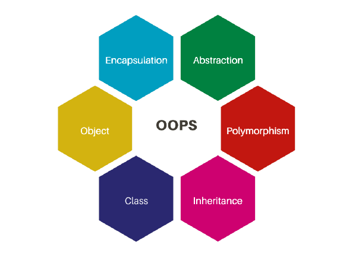
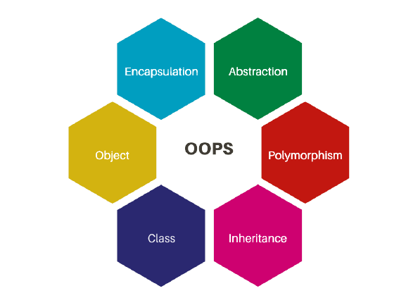

Pylint and OOP terms
Pylint should be easily installable using pip.
Command: pip install pylint
How to invoke PylintTo run Pylint, change the directory to where the file is located on command prompt
To get a full report, run the command: pylint fileName.py
To return all errors within a file, run pylint -rn fileName.py
To run the Pylint GUI, run the following command: pylint-gui
OOP TermsFactory: a creational design pattern that offers an interface for producing objects in a superclass while allowing subclasses to choose the type of objects generated.
Instantiation: the creation of an object (or a "instance" of a specified class).
Object: A developer-created abstract data type.
Class: a blueprint for constructing objects, initializing state, and behavior implementations.
Namespace: a declarative region that gives the identifiers inside it a scope.
Constructor: A subroutine that is called to construct an object.
 

Fixture: functions that run before test fixtures are executed
Type Hinting: a technique for forcing a function to accept the appropriate data type.
Type Casting: when you assign a value of one primitive data type to another type.
Unit Test: test case to cover all possible states and configurations of the software units in order to discover bugs
Static: A static variable is one that has been allocated "statically," that is, for the duration of the program's execution.
Class Method: A class method is a method that is tied to the class rather than the class's object.
Façade: A façade is a front-facing interface that hides more intricate underlying or structural code behind it.
Design Patterns: A design pattern is a generic, repeatable solution to a common software design problem.
Method: A method is a process in object-oriented programming (OOP) that is linked to a message and an object.
Property: A property, in some object-oriented programming languages, is a special sort of class member, intermediate in functionality between a field and a method.